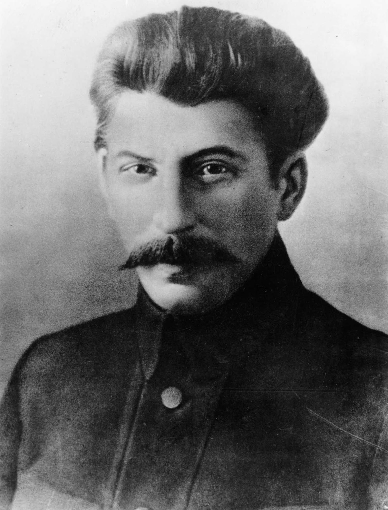

Home
Welcome to the
JOSEPH V.
STALIN
Internet
Library

"The death of Lenin is a call to our Party to be united, to preserve the unity of our Party like the apple of our eye."
— J. V. Stalin, On The Death Of Lenin, 1924
Featured work
The Agrarian Question
C O N T E N T S
--1905--
Briefly About Disagreements in the Party
--1906-1907--
The Agrarian Question
Anarchism Or Socialism
--1913--
Marxism and the National Question
--1919--
Report to Comrade Lenin
--1921--
Our Disagreements
--1924--
Trotskyism or Leninism
On The Death Of Lenin
October Revolution & Tactics of the Russian Communists
The Foundations of Leninism
Thirteenth Conference of the R.C.P.(B)
--1925--
The Fourteenth Congress of the C.P.S.U.(B.)
--1926--
Concerning Questions of Leninism
The Social-Democratic Deviation in our Party
Reply to the Discussion on the Report on Deviation in our Party
The Seventh Enlarged Plenum of the ECCI
--1927--
The Trotskyist Opposition Before and Now
Revolution in China and Tasks of the Comintern
The Fifteenth Congress of the C.P.S.U.(B.)
--1928--
The Work of the April Joint Plenum
The Right Danger in the C.P.S.U.(B.)
The Right Deviation in the C.P.S.U.(B.)
Industrialisation of the country and the Right Deviation
The Right Danger in the German Communist Party
Results of the July Plenum of the C.C., C.P.S.U.(B.)
--1929--
The National Question and Leninism
Concerning Questions of Agrarian Policy in the U.S.S.R.
--1931--
The Tasks of Business Executives
--1933--
The Results of the First Five-Year Plan
--1936--
On the Draft Constitution of the U.S.S.R.
--1937--
Mastering Bolshevism
--1938--
Dialectical and Historical Materialism
--1939--
Report to the Eighteenth Congress of the C.P.S.U.(B.)
--1950--
Marxism and Problems of Linguistics
--1951--
Economic Problems of Socialism in the U.S.S.R.